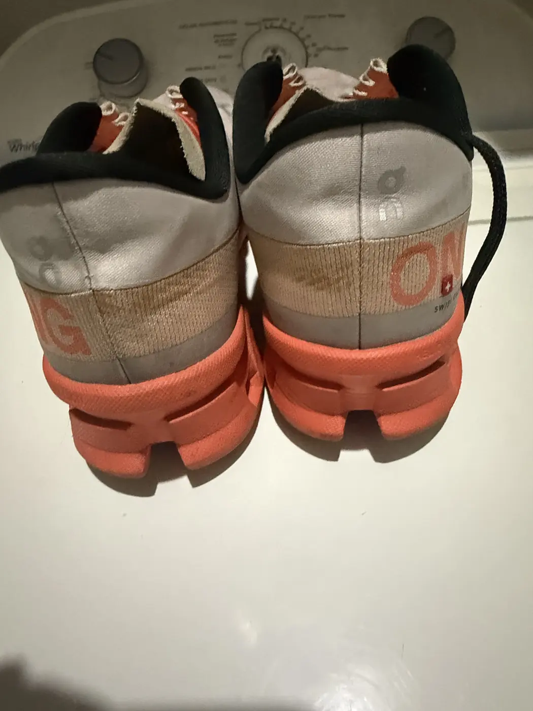
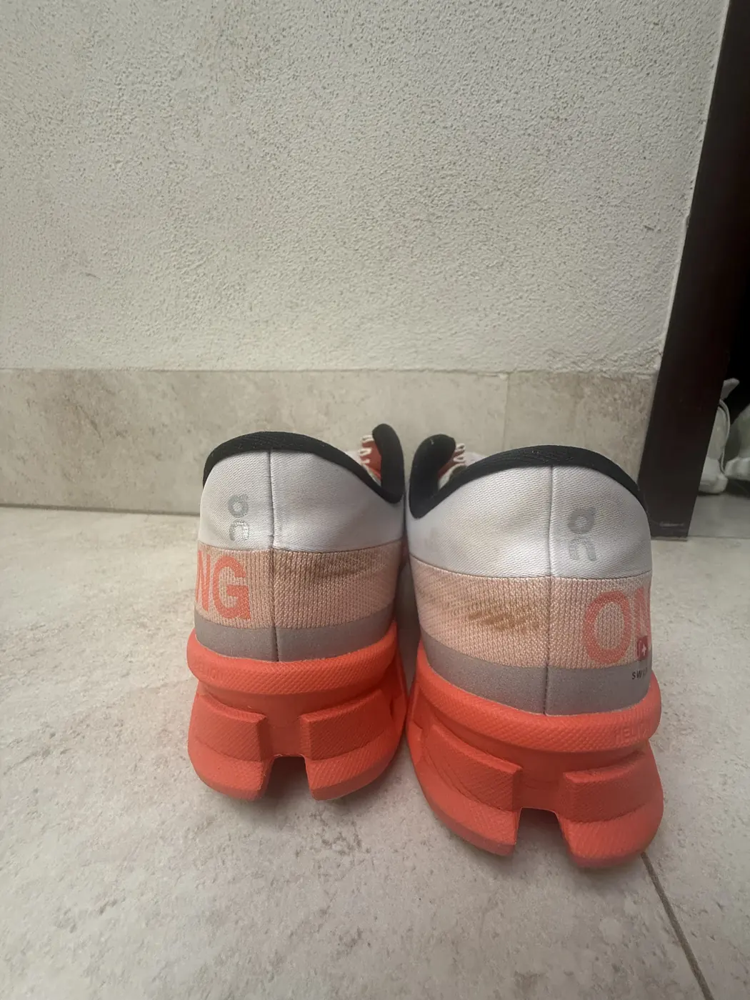

Resultados reales, par por par.
Fotos de nuestros trabajos, siempre en pares: el mismo tenis antes y después. Filtra por par y amplía cualquier foto.
Compara antes y después
Elige un par para verlo lado a lado. El resultado depende del material, la antigüedad y el tipo de suciedad de cada par.


Running naranja, vista trasera.
Trabajos por par
Tu próximo par favorito puede ser el que ya tienes.
Mándanos una foto de tu par por WhatsApp y te respondemos con el servicio recomendado y el precio.
Cotizar mi limpieza